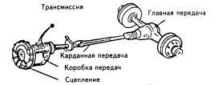
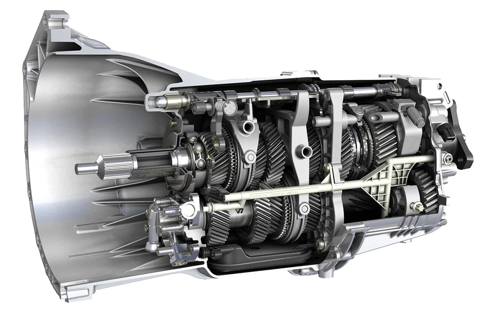
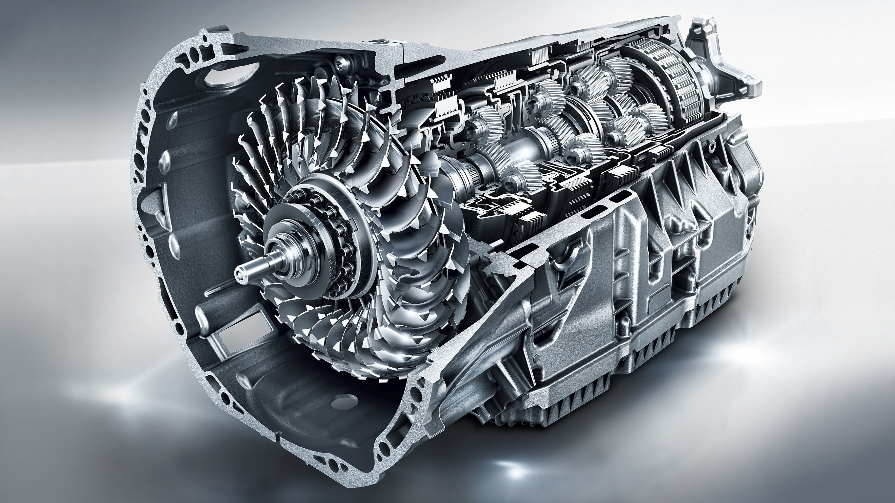
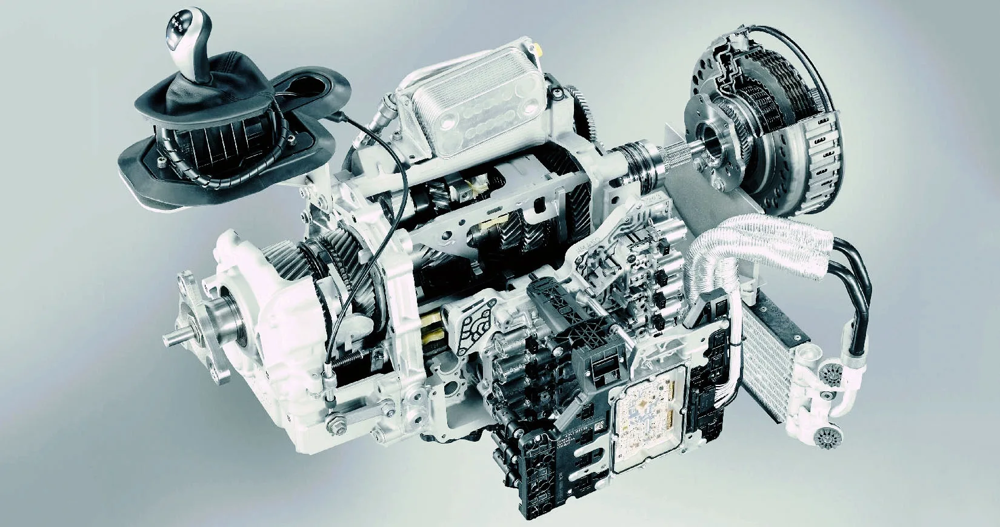
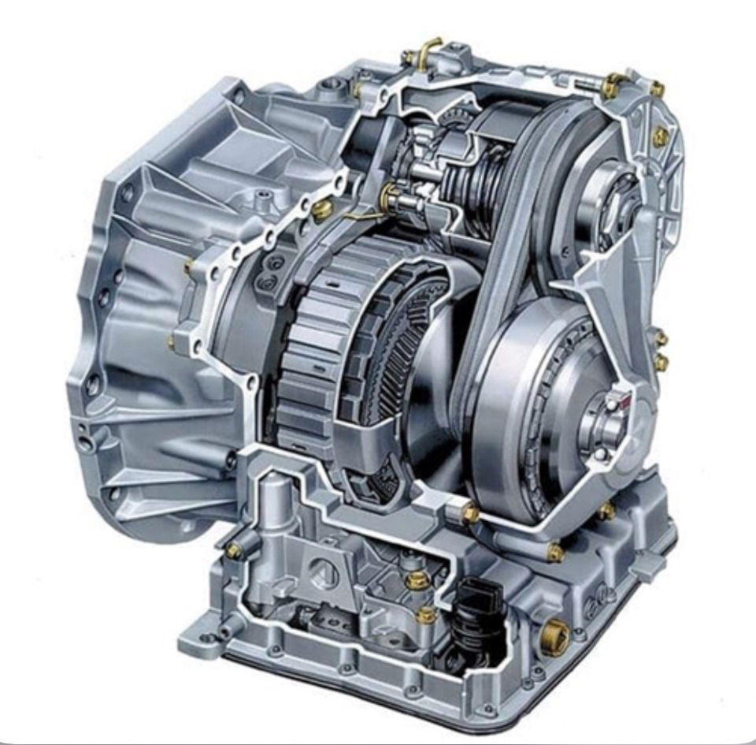
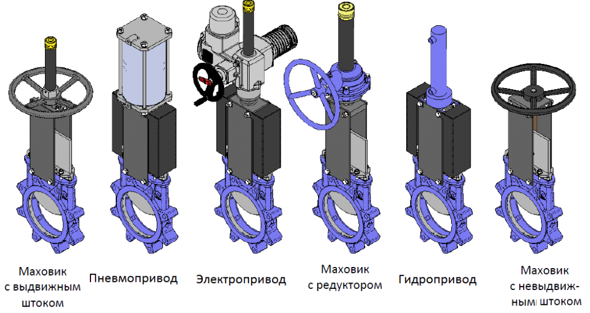

Что такое трансмиссия?
Трансмиссия автомобиля — это совокупность механизмов, передающих крутящий момент от двигателя к ведущим колесам. Она позволяет изменять величину и направление момента, обеспечивая оптимальные условия движения автомобиля в различных условиях.

Основные компоненты трансмиссии автомобиля
Основные типы трансмиссий
1. Механическая коробка передач (МКПП)

Классический вариант с ручным переключением передач с помощью рычага и педали сцепления.
Преимущества:
- Высокий КПД (до 98%)
- Надежность и долговечность
- Низкая стоимость обслуживания
- Полный контроль над автомобилем
- Меньший расход топлива (при умелом вождении)
Недостатки:
- Требует навыков управления
- Утомляет в пробках
- Медленное переключение по сравнению с автоматическими аналогами
2. Автоматическая коробка передач (АКПП)

Переключает передачи самостоятельно без участия водителя. Основные виды: гидротрансформаторные, роботизированные и вариаторы.
Преимущества:
- Простота управления
- Комфорт в городских условиях
- Плавность переключения
- Защита двигателя от перегрузок
Недостатки:
- Более высокий расход топлива
- Дорогостоящий ремонт
- Меньший КПД (85-90%)
- Задержки при переключении
3. Роботизированная коробка передач (РКПП)

Механическая КПП с автоматизированным управлением. Бывают однодисковые и преселективные (DSG, PDK).
Преимущества:
- Быстрое переключение (особенно у преселективных)
- Экономичность (близка к механической)
- Возможность ручного управления
- Компактность
Недостатки:
- Дорогостоящий ремонт
- Рывки при переключении (у простых версий)
- Перегрев при агрессивной езде
- Сложная электроника
4. Вариатор (CVT)

Бесступенчатая трансмиссия, плавно изменяющая передаточное число.
Преимущества:
- Идеальная плавность хода
- Оптимальные обороты двигателя
- Хорошая топливная экономичность
- Простота управления
Недостатки:
- Ограниченный ресурс (обычно 150-200 тыс. км)
- Дорогое обслуживание
- "Монотонный" звук двигателя
- Не любит резких стартов и буксировки
Сравнение типов коробок передач
| Параметр |
МКПП |
АКПП |
РКПП |
Вариатор |
| КПД |
95-98% |
82-90% |
90-95% |
88-92% |
| Расход топлива |
Низкий |
Высокий |
Средний |
Низкий |
| Ресурс |
300+ тыс. км |
250-300 тыс. км |
200-250 тыс. км |
150-200 тыс. км |
| Стоимость ремонта |
Низкая |
Высокая |
Очень высокая |
Высокая |
| Комфорт |
Низкий |
Высокий |
Средний |
Высокий |
| Динамика |
Высокая |
Средняя |
Очень высокая |
Средняя |
Другие компоненты трансмиссии
Сцепление
Механизм, временно разъединяющий двигатель и коробку передач для плавного переключения передач.
Карданный вал
Передает крутящий момент от коробки передач к заднему мосту (в задне- и полноприводных авто).
Дифференциал
Распределяет крутящий момент между ведущими колесами, позволяя им вращаться с разной скоростью.
Раздаточная коробка
В полноприводных автомобилях распределяет момент между осями.
Главная передача
Увеличивает крутящий момент и передает его на полуоси ведущих колес.
Привод автомобиля
Передний привод (FWD)
- Лучшая курсовая устойчивость
- Экономичность
- Больше места в салоне
- Склонность к недостаточной поворачиваемости
Задний привод (RWD)
- Лучшее распределение веса
- Более спортивное управление
- Склонность к избыточной поворачиваемости
- Хуже на скользкой дороге
Полный привод (AWD/4WD)
- Лучшая проходимость
- Уверенное сцепление в любых условиях
- Повышенный расход топлива
- Сложная и дорогая конструкция
